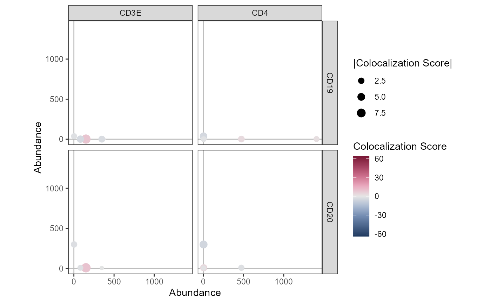

Create an abundance/colocalization scatterplot
AbundanceColocalizationPlot.RdCreate a scatter plot of the abundance values for two sets of markers from a Seurat object. The points (each corresponding to a cell) in the scatter plot are colored by the colocalization of the two markers.
Arguments
- object
A Seurat object.
- markers_x, markers_y
A character vector of markers to plot along the x- and y-axis respectively.
Use the same scales for all plot panels.
- coord_fixed
Fix the aspect ratio of the plot.
- pt_size
Size or size range of the points.
- draw_origo
Draw lines through the origin (0, 0) in the plot.
- layer
Name of layer to fetch abundance data from. If NULL, the default layer is used.
- coloc_score
Name of the colocalization score to plot.
- colors
Colors to use for the colocalization score.
Examples
library(pixelatorR)
# Load example data as a Seurat object
pxl_file <- minimal_mpx_pxl_file()
seur_obj <- ReadMPX_Seurat(pxl_file)
#> ✔ Created a 'Seurat' object with 5 cells and 80 targeted surface proteins
# Plot with data.frame
AbundanceColocalizationPlot(seur_obj, c("CD3E", "CD4"), c("CD19", "CD20"))
#> Warning: No layers found matching search pattern provided
#> Warning: data layer is not found and counts layer is used
#> Warning: Removed 2 rows containing missing values or values outside the scale range
#> (`geom_point()`).
